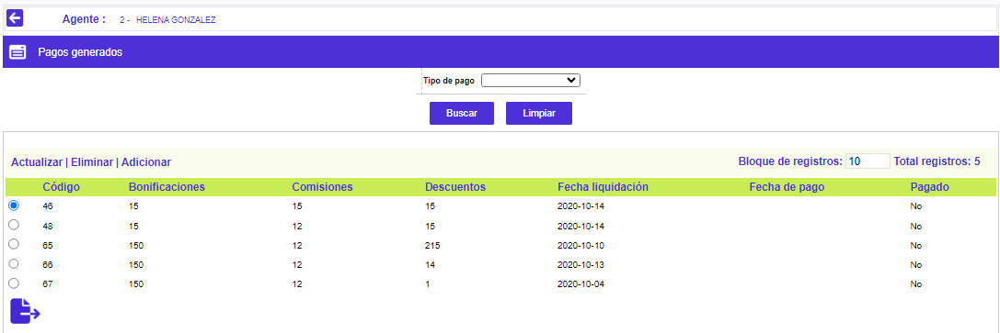
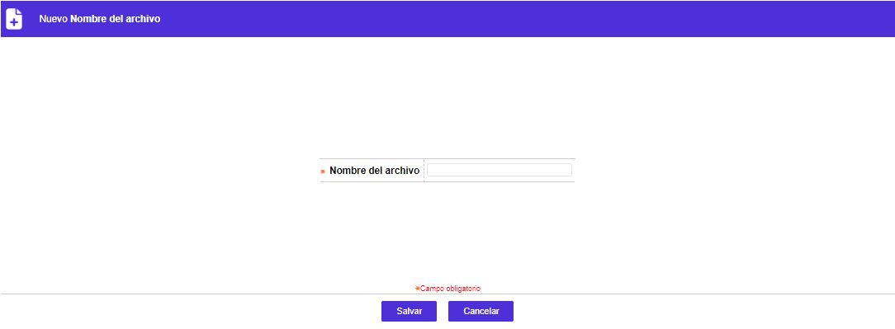

Pago y abono de honorarios
Este formulario despliega a manera de consulta todos los pagos cancelados o sin cancelar para cada uno de los agentes de cobro por casa de cobranza. Respecto de los pagos sin cancelar, se posibilita al funcionario encargado que ingrese la fecha en que realiza el pago al agente bien sea por ventanilla o para que mediante una interface se genere el abono correspondiente en una cuenta corriente o de ahorro.
Filtro: El formulario cuenta con un filtro inicial de búsqueda, necesario para la consulta de la información:
|
Agente |
Despliega por defecto los códigos y nombres de todos los agentes de cobro ingresados por casa de cobranza. |
El formulario contiene la opción Pagos:

Pagos: Si el usuario invoca la opción Pagos se despliega un formulario con los siguientes campos. El formulario contiene los enlaces: Actualizar,Eliminar y Adicionar. Adicionalmente cuenta con el botón especial Generar archivo abono de honorarios.
Filtro: El formulario cuenta con un filtro inicial de búsqueda, necesario para la consulta de la información:
Generar archivo abono de honorarios:

Adicionar: Si el usuario invoca la opción Adicionar se despliega un formulario con los siguientes campos:
|
Bonificaciones |
Indica el valor devengado por este concepto por el agente de cobro, liquidado por el sistema acorde con los parámetros definidos en la opción Metas de este mismo módulo, sobre los objetivos logrados desde la anterior hasta la presente fecha de liquidación de comisiones y bonificaciones. |
|
Comisiones |
Señala el monto devengado por este concepto por el agente de cobro, liquidado por el sistema acorde con los parámetros definidos en la opción Comisiones de este mismo módulo, sobre las actividades finalizadas exitosamente, propias y/o compartidas, desde la anterior hasta la presente fecha de liquidación de comisiones y bonificaciones. |
|
Descuentos |
Contiene el monto acumulado deducido por los diferentes conceptos de descuento que afectan a este agente de cobro, liquidado por el sistema acorde con los parámetros definidos en la opción Descuentos por agente de este mismo módulo, sobre los ingresos obtenidos desde la anterior hasta la presente fecha de liquidación de comisiones y bonificaciones. |
|
Fecha liquidación |
Campo en formato YYYY-MM-DD, desplegado por la forma y que señala la fecha en que se ejecutó el proceso de Liquidación de comisiones y bonificaciones que arroja los valores monetarios que hacen parte del mismo registro. |
|
Pagado |
Campo que posee lista de valores adjunta de la cual se puede seleccionar Si o No se ha realizado efectivamente el pago. |
|
Fecha de pago |
En este en formato YYYY-MM-DD, el funcionario encargado puede registrar la fecha en que efectivamente realiza el pago por ventanilla o genera el registro para que por medio de la interface se efectúe el abono a una cuenta corriente o de ahorro. |
|
Salario básico |
Muestra el monto del sueldo devengado por agente, dato ingresado a través de la opción Agentes de cobro de este mismo módulo. |
Actualizar: Si el usuario invoca la opción Actualizar se despliega un formulario en cual los únicos campos modificables son los siguientes: